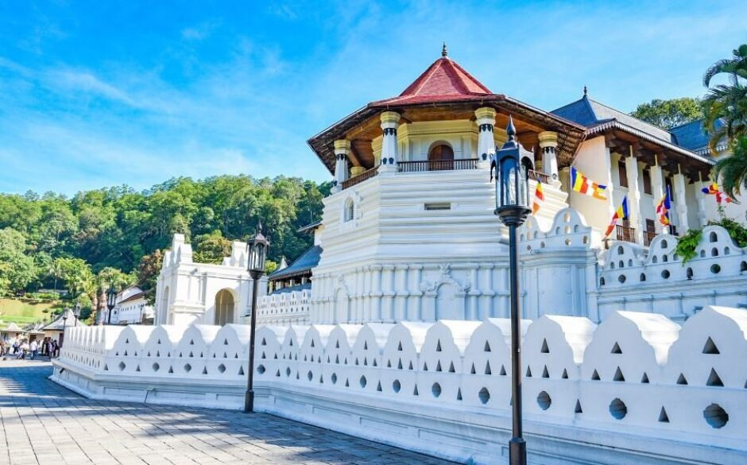

Description: The image shows the Temple of the Sacred Tooth Relic (Sri Dalada Maligawa) in Kandy, Sri Lanka. The temple complex features elegant white stone walls with traditional Kandyan architectural patterns and decorative cut-outs. A prominent octagonal pavilion (Pattirippuwa) with a red-tiled roof stands out, adding to the temple’s royal appearance. Colorful Buddhist flags line the building, symbolizing peace and devotion. The neatly paved pathway, classic lantern-style lamps, and surrounding greenery create a calm and sacred atmosphere. Set against a backdrop of hills and a clear blue sky, the scene reflects the temple’s importance as a place of worship, history, and cultural heritage..
History: The Temple of the Sacred Tooth Relic was built to house the Sacred Tooth Relic of Lord Buddha, which has been venerated in Sri Lanka for over 1,600 years. According to history, the relic was brought to Sri Lanka in the 4th century AD during the reign of King Kirthi Sri Meghavarna, hidden in the hair of Princess Hemamala from India..